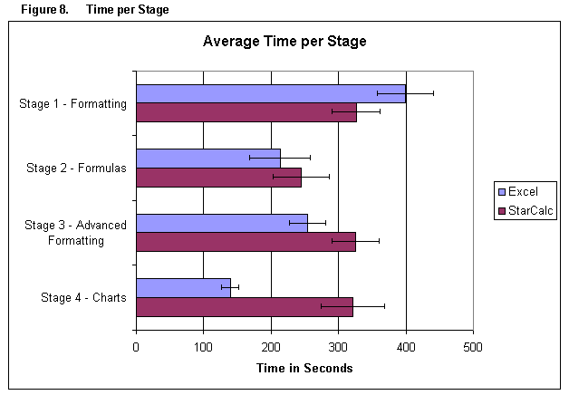
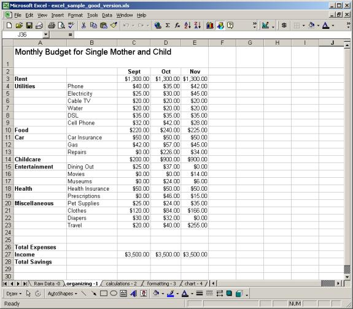

|
by Susanne Eklund, Michal Feldman, and Mary Trombley
|
|||||||||||||||||||||||||||||||||||||||||||||||||||||||||||||||||||||||||||||||||||||||||||||||||||||||||||||||||||||||||||||||||||||||||||||||||||||||||||||||||||||||||||||||||||||||||||||||||||||||||||||||||||||||||||||||||||||||||||
StarOffice Calc v. MS Excel
|
|||||||||||||||||||||||||||||||||||||||||||||||||||||||||||||||||||||||||||||||||||||||||||||||||||||||||||||||||||||||||||||||||||||||||||||||||||||||||||||||||||||||||||||||||||||||||||||||||||||||||||||||||||||||||||||||||||||||||||
Table of ContentsIn this report, we evaluate the beta release of StarOffice Calc 6.0, the spreadsheet application contained in Sun Microsystems' StarOffice open source software suite. We compare StarOffice Calc to Microsoft Excel 2000. Our study has the following objectives:
We tested twelve graduate students from the University of California, Berkeley.? Our participants were all current Excel users who worked with Excel at least once a month for various business and educational purposes. Our study evaluated common spreadsheet functions in four main categories: Basic Formatting, Formulas, Advanced Formatting, and Charts. We presented our participants with two scenarios, one for Excel and one for StarOffice Calc.? Each scenario consisted of four discrete stages corresponding to the four categories. ?Each stage required the participants to complete a series of tasks. Our participants rated almost all of the 15 tasks slightly easier to complete in Excel than in StarOffice Calc, but the reported difference between the two systems was only significant in two tasks: merging cells and inserting charts, both of which were rated significantly easier in Excel.? Other tasks that were particularly difficult to perform in StarOffice Calc included inserting a formula, drawing and formatting shapes, and choosing data ranges for charts. ?Only one task was easier in StarOffice Calc: changing the alignment of text in cells.? However, the difference between Calc and Excel was not statistically significant for this task. When participants rated each system separately, Excel scored slightly higher than StarOffice Calc on all measures. Differences were significant for the following measures: usefulness, enjoyment, ability to figure out without help, and ease of understanding icons.? Average system satisfaction was significantly higher in Excel than in StarOffice Calc.? When users directly compared the systems, they reported, on average, a slight preference for Excel. While Excel outperformed StarOffice Calc in almost all of our measures, it should be noted that the differences were small and quite often statistically insignificant.? Moreover, 92 percent of participants expressed willingness to switch to StarOffice Calc under the current price structure. After identifying four major problem areas in the StarOffice Calc interface, we use a severity scale and our qualitative observations to discuss the problems and suggest design improvements. Full Product DescriptionThis test evaluated the beta release of StarOffice Calc 6.0, a spreadsheet application originally produced by Sun Microsystems.? Calc is part of Sun?s StarOffice suite, an open source collection of office software applications that competes with Microsoft Office. We compared Calc to Microsoft?s Excel 2000 spreadsheet application. Our study evaluated frequently-used spreadsheet functions in four main categories: basic formatting, formulas, advanced formatting, and charts.? The categories and associated tasks are outlined in Table 1.
Sun promotional materials [1] indicate that the StarOffice suite has been designed for "small and home office users who need an alternative productivity suite and...education and enterprise users who work in mixed-platform environments".? From this broad user group, we decided to test current Excel users. Our participants regularly use Excel for various business and educational purposes including accounting, budgeting, financial and statistical analysis, and chart creation.? Test ObjectivesOur usability test had several objectives: Objective 1:? Investigate which parts of StarOffice Calc's interface support or hinder the activities of current Excel users. ? Which parts of the interface are troublesome for users? ? Which specific tasks are troublesome for users? ? In which areas do participants spend significantly more time completing tasks in StarOffice Calc than in Excel? Objective 2:? Compare user satisfaction ratings for the two systems. ? Are participants significantly more satisfied with one system than the other? ? Do participants enjoy using one system more than the other? ? Were users satisfied with file conversions between the two formats? ? After using StarOffice Calc to perform basic tasks, are the participants willing to switch from Excel to StarOffice Calc? Objective 3:? Develop design suggestions for the StarOffice Calc development team based on our quantitative and qualitative data. ParticipantsOur twelve participants were graduate students from the Haas Business School and the School of Information Management and Systems (SIMS) at the University of California, Berkeley.? We selected these participants through solicitations to general mailing lists at Haas and SIMS.? Their ages ranged from 22 to 41, with an average age of about 27.? Our participants were all current users of Excel who worked with Excel at least once a month.? The majority of our participants (92%) used Excel at least weekly. The average participant: ? Used Excel slightly more than once a week ? Created charts and graphs in Excel once a month ? Used calculation functions more than once a month ? Formatted tables more than once a week ? Used advanced features, like macros, more than once a year. Our participant sample differs from a random sample of the population in several ways.? Since we recruited participants from a university, our sample has a high average level of education.? Our participants most likely have high levels of computer knowledge and easier access to technology.? Finally, they currently use spreadsheets in an educational environment rather than solely in the home or in the workplace.? Our participant?s average age most likely also differs from the population. Table 2 presents a summary of our participants? salient characteristics.
Context of Product Use in the TestTasksWe presented our participants with two major scenarios, one for Excel and one for StarOffice Calc.? These scenarios included four discrete stages: basic formatting, adding formulas to cells, advanced formatting, and adding charts.? Since we felt that appropriate task selection was important to the success of our study, we made use of several resources in choosing a task set.? We examined each spreadsheet?s Help sections and marketing materials [1] to determine what the developers felt were the most important tasks.? We also asked current Excel users to describe the tasks they performed frequently.? Finally, we used our personal experience with Excel to help shape the tasks. At the test commenced, the computer screen displayed a set of base data in either Excel or StarOffice Calc.? The test administrator then showed the participant a stage illustration, a sheet of paper that showed the base data with significant formatting or calculation alterations (see Appendix D for stage illustrations).? The administrator asked the participant to change the base data on the screen to make it look like the data on the paper.? Once the participant had completed all the tasks in the stage, the administrator showed him or her the same data set with more alterations.? The participant again manipulated the base data until it appeared like the data on the sheet.? After completion of all four stages, the participant was asked to repeat a similar set of tasks in the other spreadsheet with slightly different data. We considered a task complete when the participant?s spreadsheet substantially resembled the stage illustration with respect to the task.? If a participant did not notice that s/he had neglected to complete a certain task, we prompted him/her to perform the task.? We considered a stage complete when the participant had either completed all tasks or indicated that s/he was not going to finish the remaining task(s).? The participants themselves decided when to abandon a particular task.? Test Facility and Computing EnvironmentThe participants were tested in a computer lab at the University of California, Berkeley.? The lab had a low to medium noise level during the test.? This environment is equipped with cubicles and standard office equipment; it resembles a workplace environment.? The test equipment and setup is described in Table 3. Table 3. Test Equipment and Setup
Test Administrator ToolsAll questions to test participants were administered orally.? Laptops with Excel spreadsheets were used to record the participants? actions, responses to questions, time spent on each stage, verbal comments, and qualitative behavioral observations.? The question responses were recorded in a standard Excel spreadsheet; the other data was captured using an Excel logger macro.?? We tested our survey design on two pilot participants.? We revised our study design, task set, and questions based on the results of these pilot tests.? The following section describes our final design. Logical DesignWe divided our participants into two groups: half of them tested Excel first and StarOffice Calc second, and the other half tested StarOffice Calc first and Excel second. ?Using this design, we attempted to control two major effects: the fatigue effect and the learning effect. In order to control for gender, we divided the men and women between the groups as evenly as we could, given that we had more female participants than male.? The group design is illustrated in Table 4.?
We used slightly different data sets for each system.? We wanted the data sets to be similar enough that participants would perform the same tasks on each data set, but different enough that participants would be sufficiently challenged. While participants performed the same kinds of tasks within each data set, we did not restrict the ordering of the tasks within each stage.? For example, one stage required users to add empty columns, merge cells, and move data from cell to cell.? Participants could perform these tasks in any order they desired. Asking users to repeat similar tasks with the second system increased the risk of a learning effect, because subjects became familiar with the tasks when they completed them in the first system. ?Our experiment design, with opposite ordering for the two user groups, is intended to counter these learning effects. VariablesThe following tables describe the measures we set out to capture and the variables we used to operationalize the measures.? Table 5 details data we gathered through direct questioning.?? The complete question set can be found in Appendix A.? The scales used for each measure are summarized in Table 6 and also included in their entirety in Appendix E.?  The following scales are seven-point Likert scales.? To view the complete question scales, refer to Appendix E.  Table 7 describes the measures that we observed directly.  We also logged errors committed by the participants with the intention of analyzing this data quantitatively.? However, errors significantly differed from each other in quality and severity, and we did not have a well-defined definition of errors at the beginning of the test.? Therefore, we decided not to include the error count in our analysis.? Instead, comments about errors appear in the qualitative sections of our results. Test Procedure?Two testers, the administrator and the recorder, participated in each test. The administrator read the script and instructed the subject throughout the test. The recorder asked the participant questions at the end of each stage and recorded the answers. In addition, the recorder ?timed each stage and logged observations, comments, and behavior.? All data were recorded in Excel spreadsheets. Our test was conducted under the supervision of the Human Subjects Committee at the University of California, Berkeley.? Accordingly, participants read and signed a consent form at the beginning of the test.? The full consent form is included in Appendix B. ? Participants were then given general test instructions.? They were asked to concentrate on the tasks and not to think aloud; however, any comments they made during the test were recorded. ?We instructed the participants to do their best, but we allowed them to stop a task at about the point they would normally abandon it if they were using a spreadsheet program in real life.? All participants were given five minutes to explore StarOffice Calc before they started to perform the Calc tasks.? For Group 1 participants, who tested Excel first, this period fell between the two systems; for Group 2 participants, who tested Calc first, it was the very first step of the test.? We hoped that this exploration period would help acclimate users to the system and allow them to become familiar with system functions and features before timing began. Before starting each system, the participants were given printed sheets showing screenshots of data arranged in a spreadsheet.? The participants were given a starter file of raw data and asked to make the data look like it did in the printed copy.? When all changes were completed, the recorder administered task rating questions to the participant and logged the answers. Participants were provided with a printed scale with which to answer the questions (scale included in Appendix E). ?The participant then moved on to the next stage.? Participants completed four stages in StarOffice Calc and four stages in Excel, answering general questions about the system after each system?s stages were complete. On occasion, the administrator interrupted a participant when he or she was clearly unable to complete the task in a reasonable amount of time.? In these cases, we marked the task as incomplete and moved on. After both systems were tested and evaluated, the recorder asked some final comparison and summary questions.? The participants were then given the chance to express their feelings about the systems and converse freely with the testers. After completion of the test, the participants were compensated for their time with a bookstore gift certificate worth twelve dollars. Participant InstructionsBoth general and individual task instructions for the participants were read verbatim from a script, which can be found in Appendix C.? The list of questions can be found in Appendix A, and the illustrations for each task stage can be found in Appendix D. Data AnalysisFor definitions of our measures and variables, please refer to the previous Variables section under Experimental Design. Order EffectsAs described earlier, participants were divided by gender and then placed randomly into two test groups containing roughly the same number of men and women.? Participants with System Order 1 tested Excel first and then StarOffice Calc; participants with System Order 2 tested Calc first and then Excel.? We analyzed the differences between System Order groups to be sure they are not significantly different. Our analysis of System Order consisted of four multivariate ANOVA tests examining individual task ratings, time measures, system ratings, and overall comparison.? The independent variable for each ANOVA was System Order, and the dependent variables are explained in Table 8. Table 8. Variables included in each ANOVA
The grand ANOVA results indicate that there are no significant differences between the groups with respect to task ratings (F (8,1) = 4.29; p > .05, n.s.), time measures (F (8,2) = 1.37; p > .05, n.s.), system ratings (F (10,1) = 11.88; p > .05, n.s.), or overall comparison ratings (F (5,6) = 0.72; p > .05, n.s.).? We therefore conclude that the fatigue and system order did not affect the data significantly, and that the groups are similar enough to be analyzed together from this point forward. Task AnalysisA primary objective of this study was to identify areas in the StarOffice Calc interface that negatively affected the performance of our participants and to suggest ways to improve the interface.? This section examines the results of all tasks and identifies tasks that are problematic in Calc. We then analyze these problematic tasks quantitatively and qualitatively and suggest ways to improve the interface to better support the tasks.? In the following section, we examine the Task Rating variable extensively.? Each user was asked to rate each task immediately after finishing the stage in which the task was attempted.? Participants were asked to rate the difficulty level of the task on the following scale: Very difficult????????????????????????????????? ????? ?? Neutral??????????????? ??????????? ??????????? ??????????? ???????? Very easy 1??????????????????????? 2??????????????????????? 3??????????????????????? 4??????????????????????? 5??????????????????????? 6?????? ?????????????????7 Each participant had two Task Ratings for each task, one in Excel and one in StarOffice Calc.? We examine each stage in turn, looking briefly at general trends; we examine the differences between the Excel Task Ratings and StarOffice Calc Task Ratings for each task, validate the differences statistically, consider the results in conjunction with our qualitative data, and suggest design improvements. It should also be noted that at times, users were unable to complete a given task because they indicated that in a normal situation they would be too frustrated to continue.?? Non-completion occurred twice in Excel (Tasks 12 and 14) and six times in StarOffice Calc (Tasks 3, 12, 13, and 14).? The non-completions are discussed in more detail in their respective task sections. Stage 1 ? Basic Formatting TasksIn Stage 1, participants were asked to add basic formatting to a financial spreadsheet.? The stage consisted of six individual tasks, detailed in Figure 1 below. Overall, participants found this stage easier to complete in Excel.? The average Excel Task Rating was 6.26 (s = 0.71), while the average Calc Task Rating was 5.73 (s = 0.69).? A t-test confirmed that these means differ significantly (t (11) = 2.81; p < .05).???? A quick visual examination of the mean Task Ratings in Figure 1 suggests that most tasks align with the overall averages, scoring slightly higher for Excel than for Calc.? Tasks 1,2,4, and 5 are rated an average of 5.5% more difficult in Calc than in Excel.  Two tasks display different patterns than the rest.? Task 6, changing alignment of text in cells, is the only task rated easier for StarOffice Calc, while Task 3, merging cells, appears to be rated much easier in Excel.? Because these tasks stand out from the rest, we examined each individually. Task 3: Merging cellsA paired samples t-test confirmed that the apparent difference between the Excel and StarOffice Calc Task Ratings is indeed significant (t (10) = 3.30; p < .01) for Merging Cells.? In addition, one participant was not able to complete this task at all, 6 participants had to use the Help Menu to find the Merge function, and 11 of our participants received an interruptive error message at one point in the process.??? Explanation of the Problem To merge cells in Excel, users have the choice of clicking on a "Merge and Center" button on the toolbar or going to the Format Cells dialog box, choosing the alignment tab, and checking the "Merge Cells" checkbox.? All users had performed this task before, and the majority used the Format Cells dialog box to perform the task.? When using StarOffice Calc, they tended to look in the same place, carefully examining each tab in Format Cells to find the right checkbox.? When they did not find "Merge Cells," they did not know where else to look.? Most users eventually found the item in the Format menu, but some remarked that selecting "define" was somewhat unintuitive.? We did observe that once users discover where the function is located in StarOffice Calc, they did not mind its placement; the burden lay primarily in the initial learning curve. In addition, one step required users to re-do a previously completed merge.? Almost all users got an error message when they tried to redefine an existing merged cell.? While it was not a fatal error, the message tended to annoy users.?? One participant remarked, ?You have to undo merge to redo it?? That?s stupid!? Recommended Design Change Task 6: Changing alignment of text in cellsWhile a t-test indicated that Excel and StarOffice Calc ratings for Task 6 were not significantly different (t (11) = -1.57; p > .05, n.s.), our qualitative observations during the usability tests suggest this task can be slightly easier in StarOffice Calc.? Explanation of the Problem Changing horizontal alignment of text in cells is virtually identical in Excel and StarOffice Calc; users simply click a toolbar button.? To align text vertically, however, Excel users must open the cell format menu, click on the alignment tab, and select a value from a vertical alignment drop-down field.? The vertical alignment menu is right next to horizontal alignment, and several users hesitated between the two; there aren?t any visual cues to let people quickly pick the right menu.? In StarOffice Calc, however, users have a virtually identical method available plus an additional accelerator: they need only click on convenient toolbar buttons to accomplish the same task.? The toolbar buttons are visual, depicting pictures of each alignment type, thus eliminating the need for the user to mentally process whether they want vertical or horizontal alignment.? Not all users found the toolbar button, but those who did indicated that its convenience pleased them.? Stage 2 - Adding FormulasIn Stage 2, participants were asked to add formulas to a financial spreadsheet, thus calculating sums, averages, and other functions across multiple rows and columns of numbers.? The stage consisted of two individual tasks, detailed in Figure 2 below. While the individual averages for each task are slightly higher in Excel, a t-test showed that overall, the differences between Excel and StarOffice Calc were not significant.?? Based on Figure 2 and on our qualitative observations, we guessed that the difference between Excel and StarOffice Calc in Task 7, inserting a formula, might be significant.? Task 8 seemed fairly close, with users reporting StarOffice Calc to be about 5.6% more difficult than Excel, which is about equal to the difference we found in Stage 1.  Task 7: Inserting a formulaWe performed a t-test and determined that there is no significant difference between Excel and StarOffice Calc for Task 7 (t (11) = 2.12; p > .05, n.s.). However, the distribution of individual scores for this task was bimodal in StarOffice Calc; it showed half the people giving it a 7 (very easy) and half evenly distributed between 2 and 5. Explanation of the Problem The StarOffice Calc Function Autopilot is more complex than Excel?s Function dialog.? While many participants did not use the autopilot (they typed formulas in by hand), those who did often became confused.? The dialog, shown in Figure 3, provides good explanations of the selected function in the main area; however, to pick the selected function, users have to first add it to the "Formula" box.? There is no "Add" button; they must know to double-click it.? Many users assumed they had selected the formula, clicked "OK," and then were surprised when the formula didn?t appear in the spreadsheet.  After selecting the desired formula, users were presented with the view shown in Figure 3.? Participants did not immediately understand what to put in each box; it took trial and error to create the correct function with the correct data range. Recommended Design Change StarOffice Calc needs a cleaner AutoPilot dialog box that is more intuitive to users.? A complete redesign of the box is out of scope of this study; the box should be designed iteratively and shown to users after each revision.? Also, it should be tested more comprehensively than we were able to, i.e. by having participants add multiple complex formulas to a document. Stage 3 - Advanced FormattingIn Stage 3, participants were asked to add advanced formatting to a financial spreadsheet.? The stage consisted of four individual tasks, detailed in Figure 4 below. Tasks 9-11 follow the general pattern we have observed in the task data; StarOffice Calc tasks were ranked an average of 7.0% more difficult than Excel tasks, though a t-test indicated the overall difference between Excel and StarOffice Calc was not significant. We noticed that Task 12, drawing and formatting shapes, appears more difficult than the other tasks, especially in StarOffice Calc.? We chose to examine Task 12 in depth.  Task 12: Drawing and Formatting ShapesA t-test indicated that user ratings were not significantly different between Excel and StarOffice Calc for creating and formatting shapes (t (11) = 1.46; p > .05, n.s.), but users had difficulty performing the task with both systems.?? One person failed to complete this task in Excel, and one failed to complete it in StarOffice Calc.? In StarOffice Calc, six people rated the task between 1 and 4 (Very Difficult through Neutral); in Excel, three people rated it between 1 and 4.? Explanation of the Problem Our participants struggled to complete this task for a few reasons.? First, of all the tasks we asked them to perform, it was the one they performed the least regularly in their normal use of spreadsheets.? Second, the drawing menus were difficult to locate in both systems.? Excel required the users to find the drawing toolbar located at the bottom of the screen, far away from the participants? locus of attention; StarOffice Calc required the participants to find the drawing icon in the small left navigation bar, figure out that it can be extended by clicking once and holding, and find the appropriate drawing tool.? The StarOffice Calc left menu is shown in Figure 5; the circle and arrow highlight the drawing menu icon.? People who failed to complete this task did so because they never did locate the drawing tools.  It should be noted that once participants found the drawing toolbar in StarOffice Calc, they did not have too many further problems in creating and coloring their shape.? They especially liked the way that text can be added to a shape simply by double-clicking (in Excel, users have to right-click and then choose an option from the menu).? They also found the shape color very easily.? The StarOffice Calc interface does an especially nice job of using people?s visual abilities to quickly indicate where the color can be changed.? Figure 6 shows a blue circle that a user has just drawn; the color-change menu shows the same bright shade of blue, thus associating the shape and the color-change menu together in the user?s eye.? Despite these nicely-designed features, though, the time spent locating the shape menu in the first place seemed to influence people to rate the task as more difficult.  Recommended Design Change To improve the usability of the StarOffice Calc drawing feature, we recommend choosing a better icon for the left menu.? We also recommend adding a menu item called 'Insert Drawing' to the Insert menu, as users tended to look very hard for drawing tools in this area.? Stage 4 - Inserting a ChartIn Stage 4, participants were asked to use the spreadsheet data to create a simple bar chart.? The stage consisted of three individual tasks, detailed in Figure 7 below. Overall, a t-test indicated that there was no significant difference between the systems in this stage. Tasks 14-15 follow the general pattern we have observed in the task data, having average StarOffice Calc rankings of 6.2% more than difficult than Excel ratings.? Task 13, inserting a chart, appears to be more difficult in StarOffice Calc than in Excel.? We chose to examine Task 13 in depth.? We also examine Task 14 because while it shows no significant difference between Excel and StarOffice Calc, one person in Excel and two people in StarOffice Calc failed to complete this task.  ?Task 13: Inserting a ChartThe results indicate that participants' ease-of-use ratings for inserting a chart are significantly higher for Excel than for StarOffice Calc (t (11) = 2.26; p < .05).? In addition, two people failed to complete this task in StarOffice Calc. Explanation of the Problem Creating a chart is a multi-step process that many of our users don?t regularly complete. As such, they tended to run into problems both in Excel and StarOffice Calc. Generally, though, Calc charts took longer, caused more trouble, and were more likely to be incomplete or incorrect. In Calc, many of our participants:
In general, participants found the entire process frustrating.? Some user comments were, "If it took me so long to do something, I would not do it.? It's going to drive me nuts," and "I like the Excel wizard better because it does a better job of predicting what I want." Recommended Design Change As with the function selection dialog, the chart dialog requires more thorough user testing and iterative design.? We had our users create a very basic chart, and requirements may be different for creating charts of different complexity or design. Based on our own study, we recommend the following changes:
Task 14: Selecting Data RangeWhile our analysis indicates that there is no significant difference between Excel and StarOffice Calc for this task, two participants failed to complete this task correctly in StarOffice Calc, and one failed to complete it in Excel. Explanation of the Problem We are unable to explain fully why some participants had difficulty with this step.? It seems that Excel and StarOffice Calc have taken similar approaches to support graph creation, but this approach is not terribly effective for many of our participants.? Recommended Design Change If these systems are intended to support the creation of simple graphs by people who are not data experts, they need further work. We recommend further study of data selection and graph creation, examining different types of graphs, different data sets, and different user groups.
Comparative Time AnalysisFigure 8 displays the mean times taken to complete each stage.  The results of multivariate ANOVAs indicate that the differences in time between the two systems are only significant for Stage 4, chart creation (F (1,10) = 12.91; p < .01).? As reported above, chart creation is a weak point in the StarOffice Calc interface. ? System RatingsThis section reports participants? responses to questions administered directly after they finished testing each system.? These questions are not designed to be comparative, but rather to capture an initial reaction to each system.?  The graph shows that Excel scored higher than StarOffice Calc on all measures.? To test the significance of this observation, we performed paired-sample t-tests on all system comparison questions.? Because we conducted multiple t-tests, we chose to use the .01 significance level.? We found that differences were significant for half the items at this level.?? Table 9 shows the significant items in bold type: Table 9. Differences between Excel and StarOffice Calc System Ratings
??????????????????????????????????? The results show that there were differences in participants? opinions about the usefulness of the two systems and their enjoyability.? The data also showed that participants felt that there were differences in their ability to understand the icons and to use the systems without help.? We believe that those four attributes are consistent with the behaviors of users who have had little exposure to an interface ? it seems logical that people wouldn?t enjoy a new interface as much as a familiar one, would need to use Help more often, and might not intuitively guess the meaning of unfamiliar icons.? We anticipate that with continued use of Calc, these ratings may improve. Predicting System Ease-of-UseTo determine what interface features contribute to users? overall opinions of a system, we conducted regressions to investigate whether each system?s Ease-of-Use rating can be predicted by each stage?s Average Task Ratings. In the Excel regression, only the Stage 3 (Advanced Formatting) Average Task Rating was included in the final model.? The regression equation was significant (F (1, 10) = 120.97; p < .01), and approximately 92% of the variance in ease-of-use can be attributed to Average Stage 3 Task Rating (adjusted R2 = .92).??? We found that Calc Ease-of-Use can also be predicted by the StarOffice Calc Average Stage 3 Rating (F (1, 10) = 28.71; p < .01), and approximately 72% of the variance in ease-of-use can be attributed to Average Stage 3 Task Rating (adjusted R2 = .72).??? Overall, this regression result is consistent with the qualitative data generated by the test.? Stage 3 tested advanced formatting skills such as drawing and formatting shapes, adding borders, adding background color, and changing font color.? Aside from cell merge, the steps required to complete Stages 1 and 2 were similar across the two systems, and Stage 4 was difficult for participants in both interfaces.? Stage 3, however, is where the steps needed to complete specific tasks differed significantly over a majority of the tasks.? Therefore, how easy or difficult a participant found the Stage 3 tasks tended to influence how the participant rated the system overall. Average System SatisfactionThe Average System Satisfaction is a variable combining the system-level ratings asked immediately after working with each system.? We found that the Average Excel Satisfaction was higher than the Average StarOffice Calc Satisfaction.? We found that the means were significantly different (t (11) = 5.04; p < .01) from one another.? The results are summarized in Table 10 and Figure 10. Table 10. ?????? Average System Satisfaction
?  We expected the mean Excel satisfaction to be higher because our participants were more experienced with Excel.? However, Excel only scored 16% higher than StarOffice Calc on this metric, most of which we believe can be accounted for by the participants? lack of familiarity with StarCalc. Direct System Comparison and EvaluationThe direct system comparison questions were asked at the very end of the test, after participants had tested both systems.? We found significant correlations at the .01 level between the three comparison measures: Relative Usefulness, Relative Ease of Use, and Relative Enjoyment (see Appendix F for correlation matrix). We calculated the average scores of the three measures and found that Excel scored higher for all of them. We conducted a regression analysis to check whether the Average System Comparison score can predict Willingness to Switch to Calc. The regression equation was not significant, indicating that other factors might influence users? Willingness to Switch (Adjusted R? = .14, F (1, 10) = 2.81; p = .13, n.s.). The average score for satisfaction with Calc file compatibility with Excel was 4.63 (s = 1.85) on a 7-point scale. Note, however, that this score exhibited a bimodal distribution, with the two peaks at 3 and 6.? Given our observations about file compatibility during the tests, we had expected this rating to be more satisfactory than it is; we observed that files transferred almost perfectly with the exception of shapes and minor aspects of the graphs.? For a more detailed study of file compatibility between Microsoft and OpenOffice applications, we refer the reader to the Consulting Times study [3]. Would Participants Switch to StarOffice Calc?Given the current price conditions of Excel (sold at $250 or more) and StarOffice Calc (available for free), 92% of our subjects indicated they would choose StarOffice Calc if they had to pick a spreadsheet system.? The distribution of responses is shown in Table 11: Table 11. Willingness to Switch to StarOffice Calc
We see that StarOffice Calc works well enough that people?s decision to use it or not is generally dependent upon price.? Participants preferred Excel initially but were willing to switch if Excel cost them significantly more money.? When we asked participants about their responses to this question, the participants usually said they initially preferred Excel for two reasons.? First, the participant had already learned Excel.? Second, it would be easier for the participant to use the same system that friends and co-workers use. Effects of Participants? Previous Excel ExperienceWe began our study anticipating that certain people rating themselves with higher levels of experience would complete the test in shorter amounts of time.? However, our results show no significant correlations between any experience variables and any time variables, including individual stage times, Excel Total Time, StarOffice Calc Total Time, and Overall Total Time.? We also did not find any correlations between experience and how participants rated the two systems.? The following table summarizes the primary usability problems and suggested solutions that were explained in detail in the results section above. Table 12. Usability Problem Matrix
Severity MetricsWe devised a four-point severity scale based on Jakob Nielsen?s severity ratings [2].? The scale measures three main attributes of a usability problem: frequency, impact, and persistence.? Frequency refers to the percentage of participants affected by a given problem.? Impact refers to the ease with which a participant can overcome a given problem.? Persistence refers to how able participants are to overcome a given problem once they know about it.? Each usability problem receives a rating for each attribute.? The severity ratings are detailed in Table 13.
Table 14 shows the four quantifiable usability problems discovered in the StarOffice Calc interface and our ratings of these problems using the abovementioned scale. Table 14. StarOffice Calc Severity Ratings
Suggestions for DevelopersTable 14 displays the severity ratings of the four major usability problems in the StarOffice Calc interface.? The following section offers additional comments based on our qualitative observations. The cell merge usability problem caused many complaints among our participants, although the problem did not persist after a participant's first encounter.? The cell merge problems are also the most discrete problems in the list.? Many of the other problems are interrelated and will require more re-design and user testing.? We are fairly confident that if developers allow users several paths to the merge function and allow users to merge cells into an already merged area, occurrences of cell merge errors will drop drastically. Chart insertion and drawing and formatting shapes suffer from the same problem: participants' incomplete understanding of the left navigation bar.? The left navigation bar gave poor visual cues to our users in two areas: its size and its behavior.? It is perhaps understandable that participants accustomed to Excel would not immediately notice or use a left navigation bar.? However, the StarOffice Calc visual interface does not encourage new users to explore and comprehend this new tool.? The icons are so small that users have difficulty understanding them.? Increasing the size of the left navigation bar and its icons will help bring the bar and its functions to the attention of new users.? Applying this solution will help to reduce the frequency of the errors in chart insertion and shape creation. More damaging to the usability of StarOffice Calc was the left navigation bar's erratic behavior.? The buttons on the bar require the user to click and hold the mouse while a menu pops up; sometimes there is a significant delay between clicking and menu appearance.? Our participants occasionally explored the left navigation bar to see if it contained a function they needed.? When the participant clicked once on an icon, no action occurred.? This behavior is contradictory, not only to the menu behavior of Microsoft Office products, but also to the behavior of the menus at the top of Calc's interface.? Participants, focused on the task at hand, were likely to abandon the bar without viewing the bar's contents.? A good way to reduce the frequency and impact of some of the chart insertion and shape errors is to revise the look and behavior of the left hand navigation bar. Once participants discovered how to insert a chart in StarOffice Calc, they often had difficulty creating one.? We should note, however that Excel's chart interface also plagued our participants.? Our participants did not understand many of the terms (rows, series) or the conceptual model that the chart wizard process presented to them.? More testing should be done to understand how to improve chart interfaces, both in StarOffice Calc and Microsoft Excel.? We suggest implementing some basic fixes for the problems that some of participants encountered, including allowing users to revise titles, legends, and headings of charts by typing directly onto the chart. Conclusions and Future WorkThe primary objectives of this study were to discover usability problems in StarOffice Calc and to compare user satisfaction ratings between StarOffice Calc and Excel.? Our quantitative and qualitative data show that Excel users perform slightly better and are generally more satisfied with Excel than with StarOffice Calc.? Several problematic tasks emerged from our analysis.? Difficult tasks, in order of decreasing severity, are inserting a chart, selecting a data range for a chart, finding and applying cell merge, and drawing and formatting shapes.? However, several of these tasks were also difficult in Excel; this fact leads us to conclude that more research and user testing is needed to produce better-quality interfaces for spreadsheet products.? It should also be noted that the differences between Excel and Calc were generally small and not always significant.? In addition, participants commented that Calc behaved much better than they thought it would, and they were pleasantly surprised at its general overall usability.? We must also acknowledge that participants only had five minutes to acclimate themselves to StarOffice Calc before being asked to complete tasks.? We imagine that given a longer time to explore StarOffice Calc and real-life incentives to do so, people might grow to like it and perform as well as they do with Excel. We recognize that our study was limited; our participant pool was small and differed from the general population in many ways.? We were also able to test only a small subset of spreadsheet functions.? Future work should test a broader range of participants and a different set of tasks; StarOffice Calc might also benefit from a focused study of difficult tasks such as chart creation.? Such a study could then inform iterative design. [1] Sun Corporate Website.? "Desktop & Webtop, StarOffice 6.0 Beta Software."? Accessed 12/11/01, [2] Nielsen, Jakob.? "Severity Ratings for Usability Problems."? Accessed 12/11/01, [3] Zijleman, Erwin and Harris, Stephen E. "The OpenOffice Rosetta Stone: Putting StarOffice/OpenOffice Conversions to the Test."? ??????????????????????????????????????????????????????????????????   *Pricing question structure: 
Appendix B. Statement of Informed Consent A group of professors and graduate students in the School of Information Management and Systems, at UC Berkeley are conducting studies to assess the usability of some desktop software. If you volunteer to participate in this study, you will be asked to use one or more computer systems to ?use? some software designed for doing everyday tasks such as writing, doing calculations, painting etc.? and answer some questions about the software.? The questions will be asked orally before, and after your usage of the software.? There will also be written questionnaires before and after each activity.? Your interactions with the computer might be recorded on with keystroke logging software. There are no benefits to you for participating, other than what may be an educational experience in using software that you might not have used before.? We hope that the research will benefit society by improving the usability of software.? This research poses no risks to you other than those normally encountered in daily life. All of the information from your session will be kept confidential and be referred to by an ID number. The correspondence between your name and ID number will be kept confidential and treated with the same care as our own confidential information.? We will not name you if and when we discuss your behavior in research publications.? After the research is completed, we may save the notes for future use by ourselves or others.? However, this same confidentiality guarantees given here will apply to future storage and use of the materials. You will be paid $12 an hour for participation in this study. The study will take between one to two hours. Your participation in this research is voluntary, and you are free to refuse to participate or quit the experiment at any time.? Whether or not you chose to participate will have no bearing in relation to your standing in any department of UC Berkeley.? If you have questions about the research, you may contact Dr. Rashmi Sinha at 643-4314, or by electronic mail sinha@sims.berkeley.edu.? You may keep a copy of this form for reference. Please sign and date below: I have read this consent form and agree to participate in this research. ____________________________???? ___________________________ ___________ Signature?????????????????????????????????????? Full name??????????????????????????????? Date Appendix C. Instructions to Participants- Script Note that this is the script for the group that does StarOffice Calc first. The script for the group that does Excel first is identical except for the order of the systems. Hi, my name is _____________.? I?ll be working with you in today?s session.? This is _________, and she'll be taking some notes as you work.? Let me explain why we?ve asked you to come in today. We?re here to test how easy it is to use spreadsheets to complete common tasks.? We are testing to see if there are differences between Excel and another spreadsheet product called StarOffice Calc. You will be performing some typical tasks with both spreadsheet programs today, and I?d like you to try and perform as you normally would.? For example, try to work at the same speed and with the same attention to detail that you normally do.? You may find that you have some difficulty finishing a particular task. Let us know at about the point you would normally abandon that task if you were using your normal spreadsheet program in real life-- and we'll move on. Do your best, but don?t worry too much about the results?we're testing the software, not you.? Also, be aware that one of our test programs is still in development, and it might not act as you expect.? There is a chance that the system will crash during your test, and if this happens, we'll let you know what to do.? You may ask questions at any time, but I may not answer them, since this is a study of the programs, and we need to see how well they work when someone uses them independently.? We will be timing your performance on these tasks, so don?t worry about thinking aloud, which is often done during usability tests.? Instead, concentrate on the task at hand, but do let me know if you have a comment or question, and we'll pause the timer. During today's session, we'll also be asking you to complete some forms and answer some questions.? It's important that you answer candidly.? Our role here today is to discover both the flaws and advantages of this product from your perspective; so don?t be shy about telling us what you think. Let?s begin by having you complete the consent form and the background information questionnaire. (Administer Consent form and Background Questionnaire) You'll be working with two different spreadsheet programs today, StarOffice Calc and Excel.? we'll start you off in StarOffice Calc.? You'll complete a series of tasks for us and answer some questions.? Later, you'll complete a similar series of tasks in Excel. Today we?re going to use StarOffice Calc, a program you may not have used before. To get you started, you'll have 5 minutes to explore the system.? Take a look at the icons, menus, and toolbars.? After 5 minutes we'll start the test. (System exploration - 5 minutes ) (Administrator opens StarOffice Calc file) Here?s the data file you'll be working with in StarOffice Calc (Repeat the following for all four stages) We?d like you to change this data so that it looks like this (show the printed sheet for StarOffice Calc for the relevant stage) Switch to Excel This part of the test will be very similar to the last one.? I'm going to ask you to perform similar tasks on this Excel data set.? (Repeat the following for all four stages) Appendix D. Screenshots of Stage Illustrations Excel Stage 1?  Excel Stage 2
Excel Stage 3
Excel Stage 4
StarOffice Calc Stage 1
StarOffice Calc Stage 2
StarOffice Calc Stage 3
StarOffice Calc Stage 4
Experience:
Satisfaction: Very Unsatisfied??????????????????????????????????? ??????? Neutral????????????????????????????????????????? ???? Very Satisfied 1????????????????????? 2????????????????????? 3????????????????????? 4????????????????????? 5????????????????????? 6????????? ??????????? 7????????? Performance Expectation: Much worse than Excel????????????? ?? No Difference????????????? ????????????????? Much better than Excel 1????????????????????? 2????????????????????? 3????????????????????? 4????????????????????? 5????????????????????? 6????????? ??????????? 7????????? Ease of use: Very Difficult????????????????? ??? ??????????????????? ????????Neutral????????????????? ????????????????? ????? ???????????Very Easy 1????????????????????? 2????????????????????? 3????????????????????? 4????????????????????? 5????????????????????? 6????????? ??????????? 7????????? Usefulness: Not at all Useful ??? ??????????????????? ????????Neutral????????????????? ????????????????? ????? ?????????Very Useful 1????????????????????? 2????????????????????? 3????????????????????? 4????????????????????? 5????????????????????? 6????????? ??????????? 7????????? Enjoyment: Didn?t enjoy?????? ?? ???????? ??????????????????????? ????????Neutral????????????????? ?????? ???? ???????????Enjoyed very much 1????????????????????? 2????????????????????? 3????????????????????? 4????????????????????? 5????????????????????? 6????????? ??????????? 7????????? Agreement: Strongly Disagree????????? ?? ???????? ??????????? ?????????Neutral???????????????? ?????? ???? ??????????????????Strongly Agree 1????????????????????? 2????????????????????? 3????????????????????? 4????????????????????? 5????????????????????? 6????????? ??????????? 7????????? Comparison: Excel??? ?? ???????? ??????????? ???????????They are the same????????????????????? ?????? ???? ????????????????????????????StarOffice Calc 1????????????????????? 2????????????????????? 3????????????????????? 4????????????????????? 5????????????????????? 6????????? ??????????? 7????????? Appendix F. Correlations between Final System Comparison Questions
??????????? **Significant at .01 level, two-tailed |
|||||||||||||||||||||||||||||||||||||||||||||||||||||||||||||||||||||||||||||||||||||||||||||||||||||||||||||||||||||||||||||||||||||||||||||||||||||||||||||||||||||||||||||||||||||||||||||||||||||||||||||||||||||||||||||||||||||||||||